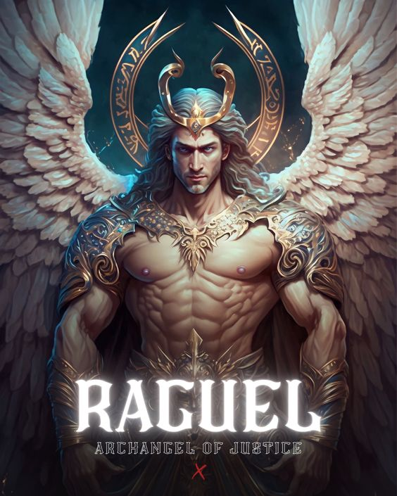
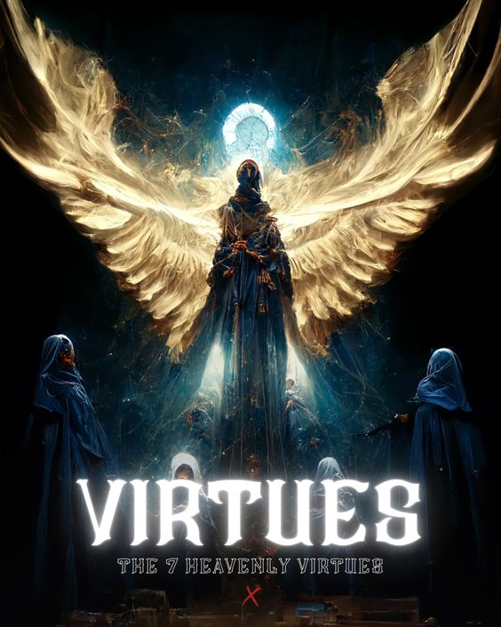
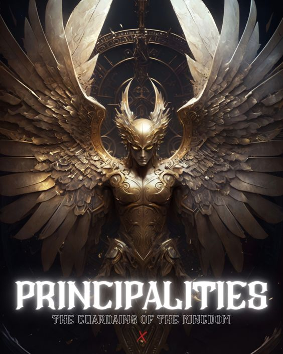
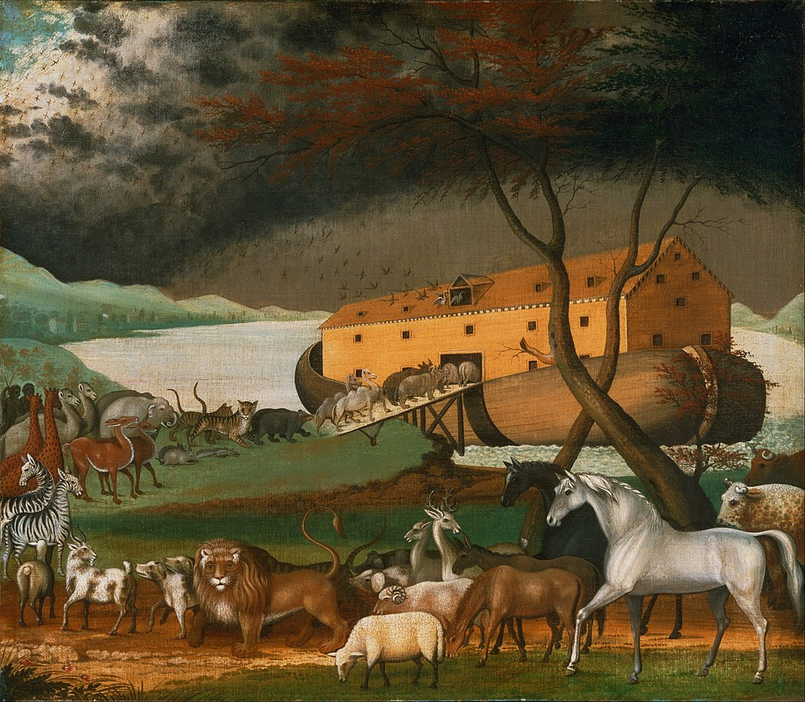

Mitologia cristiana
La mitología cristiana es el cuerpo de narraciones tradicionales asociadas con el cristianismo desde una perspectiva mitográfica. En el estudio de la mitología, el término «mito» se refiere a una historia tradicional, considerada como sagrada, que demuestra cómo funciona el mundo y sus habitantes llegaron a tener su forma actual. Estas narraciones tradicionales incluyen, pero no se limitan, a las historias contenidas en la Biblia. El cristianismo primitivo tiene sus raíces en el judaísmo helenístico y el mesianismo judío del siglo I d. C. Comenzó con las expectativas escatológicas judías y se convirtió en la veneración de un Jesús deificado después de su ministerio terrenal, su crucifixión y las experiencias posteriores de sus seguidores, como las apariciones de Jesús resucitado. Al principio, varias comunidades cristianas relacionadas pero divergentes e interpretaciones del eschaton y la vida y muerte de Jesús se desarrollaron durante el siglo i y principios del siglo i, alejándose gradualmente de los fariseos y otras sectas judías. Las formas «finalmente dominantes en el extremo de su propia rama del árbol de la evolución religiosa» fueron el cristianismo «ortodoxo» y el judaísmo rabínico.
★━━ Principales dioses ━━★
Dios

La definición más común de Dios es la de un ser supremo, omnipotente, omnipresente y omnisciente; creador, juez, protector y, en algunas religiones, providente y salvador del universo y de la humanidad.
Miguel
Es el que arrojó del cielo a Lucifer y a los ángeles que le seguían y quien mantiene la batalla contra Satanás y demás demonios para destruir su poder y ayudar a la Iglesia militante a obtener la victoria final. El nombre de Miguel significa "quién como Dios". Su conducta y su fidelidad nos deben invitar a reconocer siempre el señorío de Jesús y a buscar en todo momento la gloria de Dios.
Gabriel
En hebreo significa "Dios es fuerte", "fortaleza de Dios". Aparece siempre como el mensajero de Yahvé para cumplir misiones especiales y como portador de noticias felices. Por ejemplo, anunció a Zacarías el nacimiento de Juan el Bautista, y a la Virgen María la encarnación del Hijo de Dios.
uriel
Es uno de los príncipes regentes de los Serafines y de los Querubines. Es uno de los ángeles regentes del Sol. Es también uno de los príncipes de la Divina Presencia y el ángel de la salvación. Es el nombre de uno de los siete arcángeles, de acuerdo con la tradición del judaísmo rabínico y en algunas tradiciones cristianas, como la católica ,anglicana, la ortodoxia, y la copta.
Rafael
Su nombre quiere decir "medicina de Dios". Tiene un papel muy importante en la vida de Tobías al mostrarle el camino a seguir y lo que tenía que hacer. Tobías obedeció en todo al arcángel Rafael sin saber que era un ángel enviado por el Señor. Él se encargó de presentar sus oraciones y obras buenas a Dios. Y les dejó como mensaje bendecir y alabar a Dios, hacer siempre el bien y nunca dejar de orar.
Raguel
Es uno de los 7 arcángeles, principalmente de las tradiciones judías e islámicas. Su nombre significa "amigo de Dios" o "deseo de Dios". Raguel no se menciona en las escrituras canónicas de la Biblia. Su nombre se enumera en el seudoepigráfico Libro de Enoc como uno de los siete arcángeles (20:4), el cual mostró a Henoc el fuego que guía las luminarias del cielo (23:4).
Remiel
Es conocido como el "encargado de los resucitados". En el Apocalipsis de Esdras (4:35-36)1 es él quien responde hasta cuándo deberán esperar los justos por su recompensa: "hasta que el número de los justos esté completo".
Sariel
Sariel, es el ángel "encargado de los espíritus de los hombres que pecan". El nombre de Sariel es mencionado al lado de los otros seis arcángeles, "los santos ángeles que vigilan".
Serefines
La tradición coloca a los serafines en el rango más alto de la angelología cristiana y en el quinto rango de diez en la jerarquía angelical judía. Un pasaje seminal en el Libro de Isaías (Isaías 6: 1-8) usó el término para describir seres de seis alas que vuelan alrededor del Trono de Dios gritando "santo, santo, santo".
Querubines
En el Libro de Ezequiel y (al menos en algunos) iconos cristianos, se representa al querubín con dos pares de alas y cuatro rostros: el de un león (representante de todos los animales salvajes), un buey (animales domésticos), un humano (humanidad) y un águila (aves). Sus piernas eran rectas, las plantas de sus pies como pezuñas de toro, relucientes como bronce bruñido.
Tronos
Los tronos, a veces identificados con los Ofanim, son, en la teología cristiana, el tercero de los coros, o tipos, de la más alta categoría de ángeles, tras los serafines y querubines. Sostienen el trono de Dios, que dirige directamente su categoría, y transmiten su voluntad a las demás. Suelen ser representados con alas multicolores
Dominons
Las Dominaciones regulan los deberes de los ángeles inferiores. Es solo con extrema rareza que los señores angélicos se dan a conocer físicamente a los humanos
virtudes
Las virtudes son aquellos ángeles a quienes Dios creó para ser portadores de la gracia divina y el valor, dedicándose a que el ser humano se acerca a Dios para estar en comunión con Él. Aparecen mencionados en un versículo de Efesios, donde se declara que Cristo está "por encima de todo Principado, Potestad, Virtud, Dominación y de todo cuanto tiene nombre no sólo en este mundo sino también en el venidero."
potestades
Las potestades tienen la función de mantener el equilibrio cósmico y las leyes físicas, así como de vigilar los márgenes del mundo espiritual con el mundo físico. Son referidos en varios textos bíblicos, como en 1 Pedro donde en un pasaje se declara que a Cristo "le están sometidos los Ángeles, las Dominaciones y las Potestades"
principados
Los principados se encargan de ser los guardianes de las naciones, supervisando aquellos eventos que las afecten. Manifiestan el dominio de Dios sobre la naturaleza. Aparecen mencionados en la Carta a los Efesios donde se habla de que "para que la multiforme sabiduría de Dios sea ahora manifestada a los Principados y a las Potestades en los cielos, mediante la Iglesia,"
angeles
Los ángeles ocupan el lugar más bajo de entre los coros angelicales. Su misión es dar alabanzas y adoración: El principal de los ministerios que tienen los ángeles buenos es aquel de alabar y ofrecer incesante adoración a Dios
★━━━━━ historias ━━━━━★
La gran lluvia eterna
La historia del arca de Noé, según los capítulos 6 al 9 del libro del Génesis, comienza así: Yahvé observó que los hombres se estaban multiplicando varias veces sobre la faz de la Tierra y la violencia y la maldad crecía en ellos. «Un hombre justo y recto entre sus contemporáneos», y decidió advertirle para que se salvara con su familia. Algunos interpretan los ciento veinte años mencionados en el relato como el plazo hasta el diluvio, y para otros solo es una reducción del promedio de vida de la humanidad. Luego acontece el diluvio: ‘‘Porque dentro de siete días haré llover sobre la tierra durante cuarenta días y cuarenta noches, y exterminaré de sobre la faz del suelo todos los seres que hice‘‘. . y todas las criaturas de la Tierra murieron; sólo Noé y los que estaban con él en el arca sobrevivieron». 7 Finalmente, después de ciento cincuenta días, el arca se asentó en el monte Ararat, y las aguas retrocedieron por algunos días hasta que emergieron las cimas de las montañas. Entonces Noé envió a un cuervo que «salió, y estuvo yendo y volviendo hasta que las aguas se secaron sobre la tierra». Grabado de principios del siglo xviii que refleja el Arca de Noé y la distribución de los animales que en ella viajaron Luego Noé envió una paloma, que regresó porque no tuvo donde posarse. Noé envió de nuevo a la paloma y regresó con una hoja de olivo en su pico, y entonces supo que las aguas se habían retirado. Pero tuvo que esperar unos días más, entonces él, su familia y los animales salieron del arca, y Noé ofreció un sacrificio a Yahvé, y Dios decidió que no volvería a exterminar a todos los seres vivos con aguas de diluvio, ni habría más diluvio para destruir la tierra. 8 Para recordar esta promesa, Yahvé puso el arcoíris en las nubes, y dijo: “Y sucederá que cuando haga venir nubes sobre la tierra, se dejará ver entonces mi arco en las nubes. Y me acordaré del pacto mío, que hay entre mí y vosotros y todo ser viviente de toda carne; y no habrá más diluvio de aguas para destruir toda carne‘‘.
El genesis
Génesis 1–4. Moisés narra la creación de la Tierra y de todo ser viviente que hay en ella. Adán y Eva comen del fruto prohibido y se los expulsa del Jardín de Edén. Tienen hijos. Caín mata a Abel. Génesis 5–11. Debido a la iniquidad de los seres humanos, Dios promete que inundará la Tierra. Noé obedece el mandamiento de Dios de construir un arca y su familia se salva del Diluvio. Noé y su familia se multiplican e hinchan la Tierra. Jehová confunde el idioma de los del pueblo y los dispersa sobre toda la Tierra después que construyen la torre de Babel. Génesis 12–23. Jehová promete que Abram llegará a ser una gran nación y que su descendencia bendecirá la Tierra. Abram viaja con su esposa, Sarai, a Hebrón y luego a Egipto. Jehová hace convenio con Abram. Cambia el nombre de Abram a Abraham y el de Sarai a Sara, y les promete un hijo. Se salva a Lot, que es sobrino de Abraham, de la destrucción de Sodoma. Sara da a luz a Isaac a edad avanzada. Abraham demuestra su fidelidad a Jehová al estar dispuesto a sacrificar a su hijo Isaac. Génesis 24–26. Jehová guía al siervo de Abraham para que escoja a Rebeca como esposa para Isaac. Nacen Esaú y Jacob. Esaú vende su primogenitura a Jacob. Jehová renueva el convenio de Abraham con Isaac. Génesis 27–36. Jacob recibe la bendición de la primogenitura de su padre. Esaú aborrece a Jacob y piensa matarlo. El Señor le promete a Jacob las mismas bendiciones que se dieron a Abraham y a Isaac. Jacob sirve a Labán y se casa con sus hijas Lea y Raquel. El Señor se aparece a Jacob y le cambia el nombre a Israel. Jacob regresa a Canaán y se reconcilia con Esaú. Luego viaja a Bet-el, donde el Señor se le aparece y renueva Su convenio. Jacob tiene doce hijos y una hija. Génesis 37–50. Jacob favorece a José. José sueña que sus padres y hermanos lo honran y se someten a él. Los hermanos de José lo venden como esclavo y es llevado a Egipto. La esposa de Potifar tienta a José y lo acusa falsamente. José es encarcelado. Interpreta el sueño del copero y el del panadero de Faraón, y después el de Faraón. Faraón lo nombra gobernante de Egipto, y José prepara la nación para la hambruna. Cuando los hermanos de José van a Egipto, él los pone a prueba y los perdona. Toda la familia de Jacob va a Egipto y Jacob bendice a sus hijos. José profetiza y muere en Egipto.
Vuelve a vivir
38 Conmovido una vez más, Jesús se acercó al sepulcro. Era una cueva cuya entrada estaba tapada con una piedra. 39 —Quiten la piedra —ordenó Jesús. Marta, la hermana del difunto, objetó: —Señor, ya debe oler mal, pues lleva cuatro días allí. 40 —¿No te dije que si crees verás la gloria de Dios? —le contestó Jesús. 41 Entonces quitaron la piedra. Jesús, alzando la vista, dijo: —Padre, te doy gracias porque me has escuchado. 42 Ya sabía yo que siempre me escuchas, pero lo dije por la gente que está aquí presente, para que crean que tú me enviaste. 43 Dicho esto, gritó con todas sus fuerzas: —¡Lázaro, sal fuera! 44 El muerto salió, con vendas en las manos y en los pies, y el rostro cubierto con un sudario. —Quítenle las vendas y dejen que se vaya —les dijo Jesús.
Apocalipsis
Apocalipsis 1–3. Juan ve en visión a Jesucristo. Escribe mensajes individuales a las siete iglesias de Asia; entre ellos, mensajes de encomio, amonestación y promesas a los santos fieles de cada rama. Apocalipsis 4–11. Juan ve en visión a Dios en un trono en el reino celestial, al Cordero de Dios, y un libro sellado con siete sellos. Tiene visiones en cuanto a la apertura de cada uno de los siete sellos. Quienes tengan el sello de Dios en la frente recibirán protección de Dios en los últimos días. Juan ve guerras, plagas y muchos otros acontecimientos de los últimos días que precederán la segunda venida del Señor. Apocalipsis 12–16. Juan ve en visión la guerra en los cielos de la vida preterrenal y su continuación sobre la tierra. Enseña que las fuerzas del mal procuran destruir el reino de Dios sobre la tierra. En los últimos días, el Evangelio se restaurará en su plenitud sobre la tierra mediante la ministración de ángeles. Se harán preparativos para la batalla de Armagedón. Apocalipsis 17–22. La Babilonia espiritual se extenderá por toda la tierra. Después que los santos rectos se congreguen, Babilonia caerá y sus seguidores se lamentarán por ella. Se invitará a las personas rectas a la cena de bodas del Cordero de Dios. Satanás será atado, comenzará el Milenio y Cristo reinará personalmente sobre la tierra. Se juzgará a los muertos. La tierra recibirá su gloria celestial.